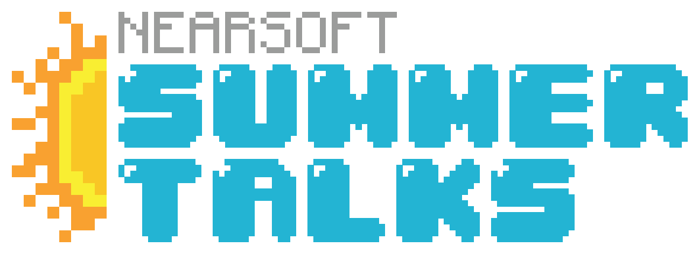
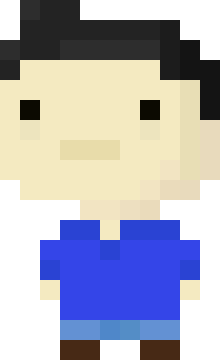

class: no-bg <div class="summertalks-header-risingsun"> </div> <div class="summertalks-logo">  </div> --- class: logo-bg, slide-blue # Who am I? ## Isaac Zepeda Ruby, JavaScript @el_keogh hardcoders.mx izepeda@nearsoft.com github.com/keogh  --- background-image: url(assets/force-unleash.jpg) class: slide-title, bg-image, slide-red # Como ser mejor Developer --- background-image: url(assets/a_long_time_ago.png) class: bg-black ??? Siempre me han preguntado como empezar en el mundo del desarrollo, o que hace un developer Muchos dicen que solo se necesita programar y ser nerd, eso es solo el comienzo. --- background-image: url(assets/fundamentals2.jpg) class: bg-image, slide-blue # Conoce los Fundamentos --- background-image: url(assets/mentor.gif) class: bg-image, slide-green # Busca un mentor --- background-image: url(assets/git.jpg) class: bg-image, slide-red # Domina Git --- background-image: url(assets/github.jpg) class: slide-brown # Usa GitHub --- background-image: url(assets/blog.jpg) class: bg-image # Escribe un Blog --- background-image: url(assets/comunity.png) class: bg-image # Participa en la Comunidad --- background-image: url(assets/read-code.jpg) class: bg-image # Lee el Código de otros --- background-image: url(assets/opensource.jpg) class: bg-image # Contribuye al Open Source --- background-image: url(assets/teach.jpg) class: bg-image, slide-green # Enseña lo aprendido --- background-image: url(assets/english.jpg) class: slide-brown # Aprende Inglés --- background-image: url(assets/exercises.jpg) class: bg-image, slide-blue # Resuelve Ejercicios --- background-image: url(assets/real-project.jpg) class: bg-image, slide-blue # Trabaja en Proyecto Real --- background-image: url(assets/devops.jpg) class: bg-image, slide-blue # Aprende de DevOps --- background-image: url(assets/comunication.gif) class: bg-image # Mejora tu Comunicación --- background-image: url(assets/humble.jpg) class: bg-image, slide-green # Se Humilde --- background-image: url(assets/conclusion.gif) class: bg-image # Conclusión --- background-image: url(assets/thanks.gif) class: bg-image # Thanks!